- 邮 箱：guogb@swc.neu.edu.cn
- 电 话：+86-024-83683332（微信号：Guo_Guibing）
- 简 历：https://www.kdocs.cn/l/cbA9bjRJTcC8（更新及时）
- 地 址：辽宁省沈阳市浑南区创新路195号东北大学浑南校区信息楼B436室, 110169
郭贵冰，长聘教授，博导，辽宁省百千万人才，沈阳·太一基础大模型、LibRec推荐系统库创始人，SCI期刊《ACM Transactions on Recommender Systems》、《Electronic Commerce Research and Applications》编委，中国计算机学会会员，中国人工智能学会智能服务专业委员会委员。师从新加坡南洋理工大学(NTU)的Prof. Jie Zhang和Prof. Daniel Thalmann，2015年7月获得博士学位；2015年1~10月，在新加坡管理大学(SMU)朱飞达教授的实验室担任研究员。2015年11月，聘为东北大学软件学院副教授，2019年，破格评为东北大学长聘教授。
研究兴趣包括 推荐系统、信息检索、智能问答、联邦学习等。在相关研究领域已发表100余篇国际学术会议和期刊文章，Google学术总引用：4590 (Google学术页面)。出版了一部学术专著：《推荐系统进展：方法与技术》（点此购买）。
推荐系统是现代Web应用的核心技术之一，通过对大数据的用户偏好行为进行分析和建模，学习出目标用户的偏好模式(用户画像)，从而给出精准的个性化物品推荐，是典型的大数据应用。课题组围绕推荐系统展开以下研究课题。
- 用户画像技术：用户画像是推荐系统的上游任务，旨在对用户进行标签化画像（智能标签），从历史数据（比如行为记录）中识别出用户的关键特征（画像分析），并在此基础上建模学习用户偏好，得到通用的用户向量表示，应用于与用户紧密相关的下游场景中。
- 通用推荐技术：研究深度学习技术在推荐系统中的应用，包括负样本采样技术、基于图卷积的推荐技术、基于自监督信号的推荐技术、基于联邦学习的隐私保护技术、基于知识蒸馏的模型压缩技术、基于反事实推理的数据增强技术、基于因果推断的推荐技术等。
- 面向应用的推荐技术：应用NLP文本、CV图像处理技术（如预训练语言模型BERT、Transformer、知识图谱、图像生成GAN），解决物品的多模态信息融合和对齐等问题，提升物品向量的语义表达能力，并与用户偏好进行匹配学习。
为便于更新，发表的代表性学术论文、承担的科研项目、指导的大创和竞赛项目等更多内容请查看：https://www.kdocs.cn/l/cbA9bjRJTcC8
科研理念：推荐系统作为应用型研究课题，其内涵包括三个方面：一是有效提升推荐算法的性能，包括推荐的准确性、公平性、可解释性、隐私保护等；二是将推荐算法应用于实际的业务场景，提升推荐技术的普适性，构建开箱可用的通用解决方案；三是将（用户、物品）画像技术、相关性匹配技术等应用于其它新型业务场景，尤其是国家导向的新产业新场景，扩展推荐技术的应用范围。
团队构成：主要由三名教授（郭贵冰、姜琳颖、赵建喆）、近50名硕士和博士研究生、多名高年级本科生组成。团队科研实力强，有多篇论文发表在CCF-A类、中科院SCI一区的顶级国际学术会议和期刊上，包括 NeurIPS、ICCV、ICLR、AAAI、IJCAI、IEEE TKDE、IEEE TNNLS等，团队已有多名本科生发表了CCF-A类学术论文。团队为每个学生配置有独立使用的GPU显卡，另有共享的多卡GPU服务器、MindSpore服务器算力，具有充足的深度学习计算资源，保障学术课题的顺利进行。
招生要求：计划每年招收 9~10名硕士生、1~2名博士生。团队每周召开学术进展讨论会，导师会根据学生的科研进展，给出针对性的指导意见。同时，博士生“传帮带”帮助硕士生、本科生更快进步。如果你是积极主动型的学生，具有极强的动手能力强、缜密的逻辑思维能力、优秀的英语读写能力，愿意努力奋斗争取美好未来，请立刻联系我们。否则的话，请勿相互耽误，谢谢。
任务发布：本团队会不定期在微信群“数据科学团队项目发布群”发布课题组的业务需求，包括：（1）科研助理：辅助硕士生或博士生完成学术课题的研究，如文献整理与分析、论文实验与分析，以共同作者的身份发表学术论文，适合科研型学生。（2）项目开发：参与完成本团队承接的应用型项目，如沈阳·太一大模型、华为昇腾众智项目、国家电网项目、辽宁省纪检监察大数据实验室项目、国家电投项目等，开发期间按周计算酬劳、按月结算，待遇优厚，适合应用型学生。（3）其它需求：组队参加大学生创新创业项目、竞赛项目、按项目导向的毕设项目，参与课题组邀请的专家学者的学术讨论会等。目前微信群有学生190+人，欢迎感兴趣的同学加入（加我微信，备注：项目发布群），积极承接发布的任务需求。
推荐信：积极参与过课题组的项目，并且表现良好的学生，可以出具推荐信。
科研项目展示
项目简介
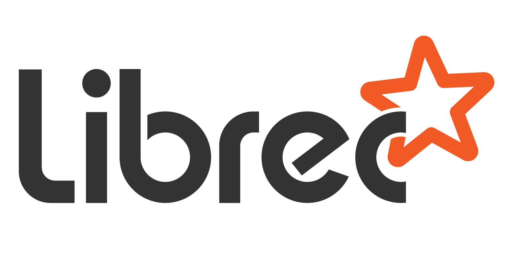是领先的推荐系统开源算法库，实现了90+个推荐算法，可解决评分预测和物品推荐两大关键问题。该开源库在GitHub的推荐系统领域排名第一，获得了业界的广泛认可和支持。据初步统计，有25篇CCF-A类、9篇SCI一区论文在实验中使用了LibRec算法。支撑了96个开源库的开发和实现。
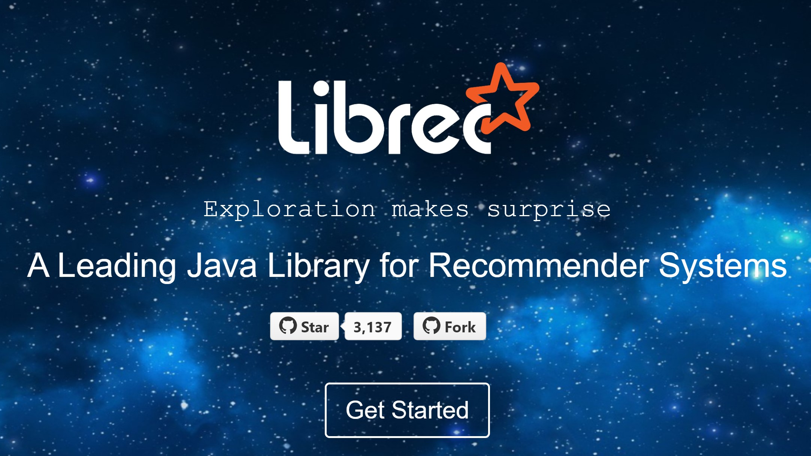
项目源码
Github源码：https://github.com/guoguibing/librec
LibRec论文：G Guo, J Zhang, Z Sun, N Yorke-Smith. Librec: A Java Library for Recommender Systems. UMAP workshops. 2015. (Google引用：235次)
项目Demo
（DePaul University）CSC577: How to set up LibRec - Recommender Systems Class
早期我自己录制的一个小Demo：
项目简介
沈阳·太一是由数据科学团队和沈阳华为共同合作，基于昇腾AI硬件和昇思MindSpore AI框架开发的多模态推荐大模型，是辽宁省首个基础大模型。大模型提供“预训练大模型+下游任务微调”的通用AI解决方案。该模型参数规模设计10亿，将多种推荐任务统一在一个共享框架中，支持文本、图像、语音、社交网络、知识图谱等多模态信息输入，通过分析海量数据来提供精准的个性化推荐。
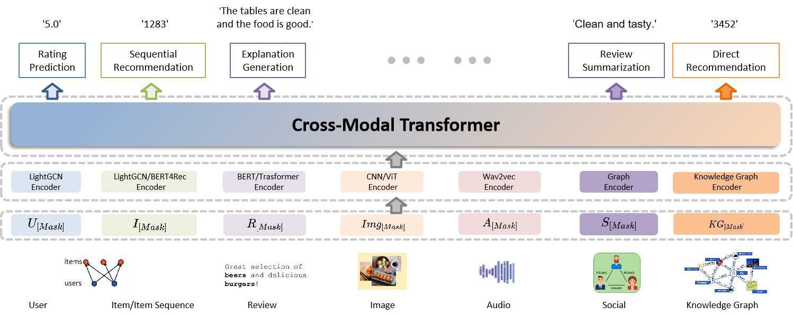 "沈阳·太一"大模型的架构示意图
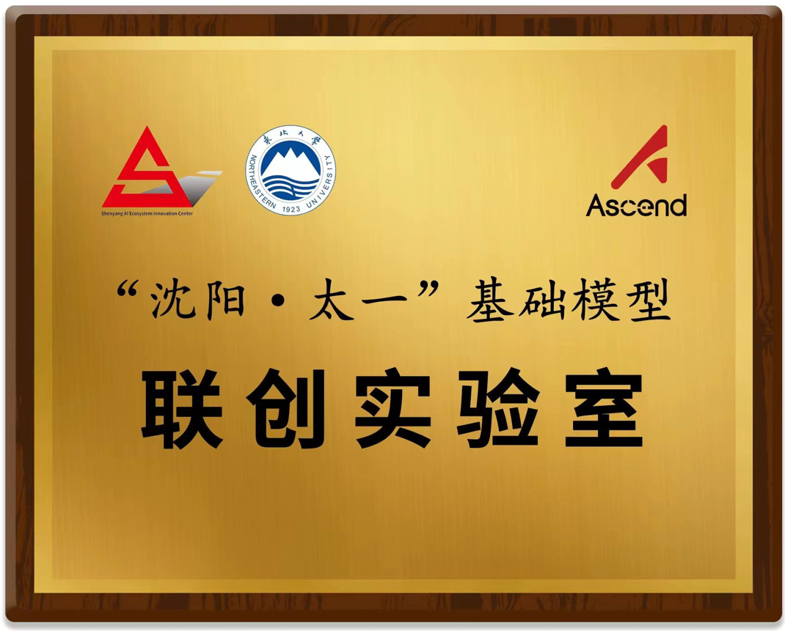 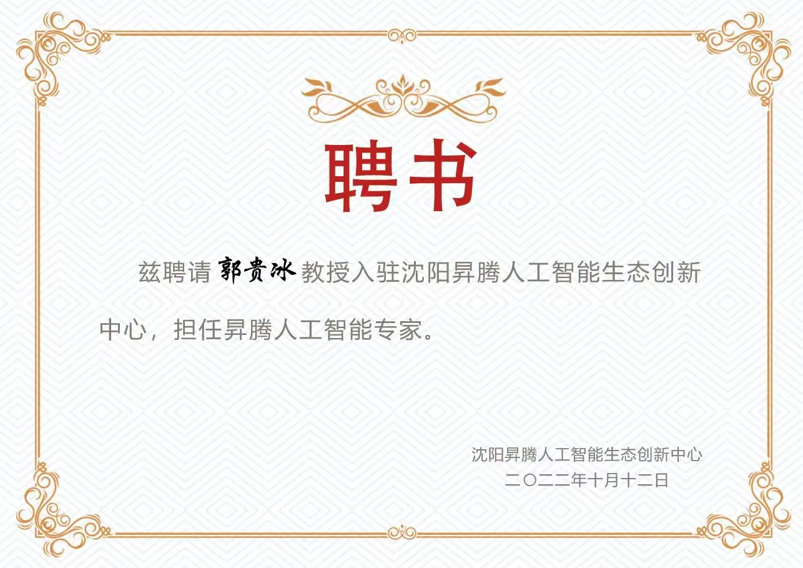
项目进展
项目自2022.10正式启动以来，进展良好，目前有7名研究生在全力开发，预计半年内完成大模型的基本功能，一年内完成全部功能和测试工作。本团队将长期维护和升级更新太一大模型，欢迎有意向的公司与我们联系，共同探讨大模型的业务应用。大模型的主要实现内容有：
- 数据流：分为离线数据流和实时数据流，覆盖从前端的用户行为埋点、日志记录，到离线端的日志流式处理、数据仓库存储，再到实时端的数据缓存、离线-实时两端的数据共享，实现全流程的数据治理功能。
- 业务流：推荐系统的业务逻辑是一个管道线，包括召回、粗排、精排和重排等步骤。它们可以从大规模的候选物品集中，逐步地缩小计算空间，优化物品排序，提高推荐列表的准确性。
- 模型实现：拆分为通用的用户画像模块、物品表示模块、推荐生成模块等三大子模块，便于将预训练好的用户和物品表示模型迁移到其它不同的应用领域，实现通用的推荐解决方案。
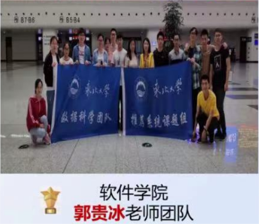
"数据科学"团队荣获华为众智星光奖
教学课程与内容
课程简介
推荐系统通过分析用户对一系列事物的历史偏好来发现其行为模式，然后从一些尚未经历过的物品中推荐一些感兴趣的物品。课程的主要内容包括：（1）基于内容的过滤算法；（2）基于用户反馈的协同过滤算法；（3）基于数据降维的隐式因子模型；（4）推荐系统的分析和评估；（5）推荐系统开源库 LibRec 及其应用。
课程内容
- Chapter 1: Introduction
- Chapter 2: Content-based Recommendation
- Chapter 3: Collaborative Filtering with LibRec
- Chapter 4: Matrix Factorization
- Chapter 5: Factorization Machine
- Chapter 6: Neural Recommendation
- Chapter 7: Sequential Recommendation
- Chapter 8: Industry Implementations
课程简介
本课程介绍自然语言处理的主要研究内容及关键技术，以及相关的研究成果。课程的主要内容包括：（1）数学基础，如贝叶斯模型、n元语法模型和 HMM模型等；（2）语言学基础，介绍有关词法和语法等方面的知识，包括词语搭配、语义消歧、句法分析等；（3）具体应用，如文本分类和聚类、信息检索、机器翻译等。
课程内容
- Chapter 1: Introduction
- Chapter 2: Basic Text Processing
- Chapter 3: N-gram Language Modeling
- Chapter 4: Text Classification
- Chapter 5: Part-of-Speech Tagging
- Chapter 6: Sequence Processing with Recurrent Networks
- Chapter 7: Question Answering and Summarization
- Chapter 8: Information Extraction
学术交流与访问
- 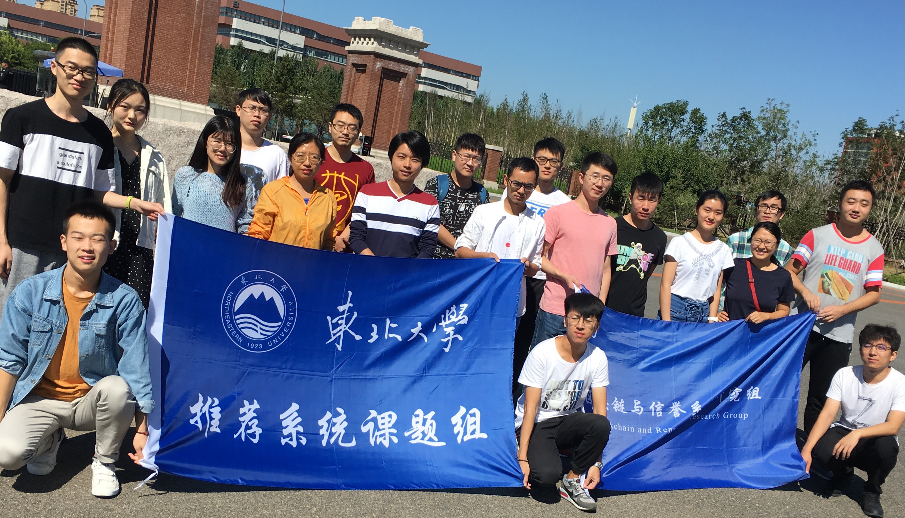
- 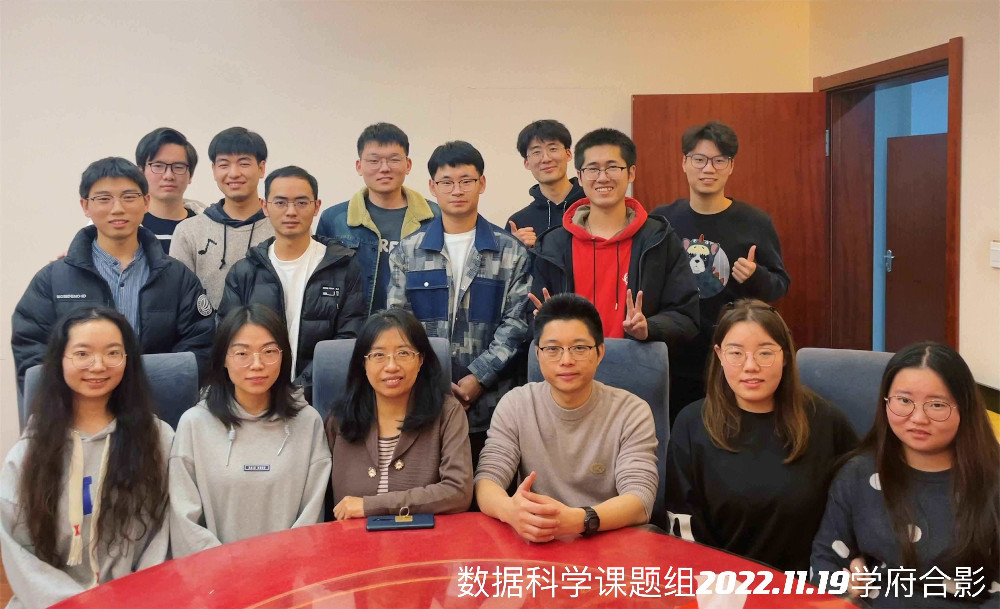

- 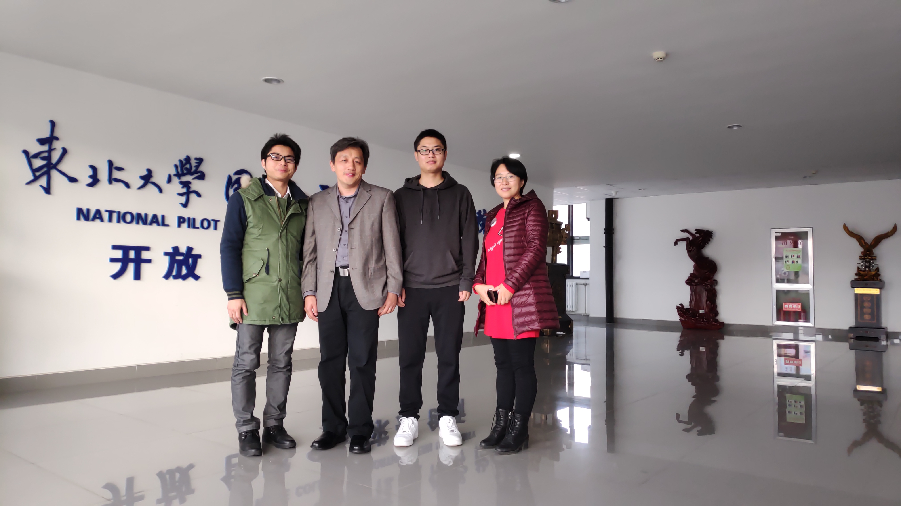
- 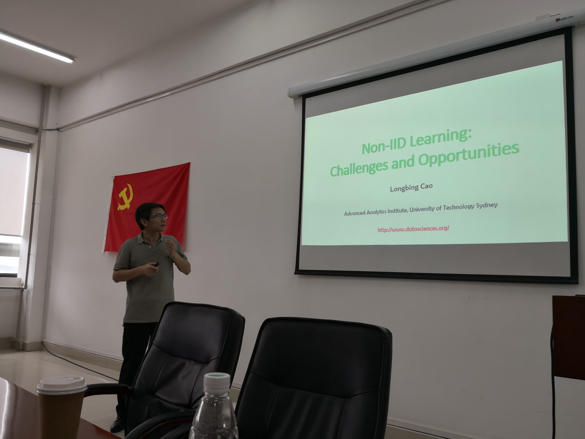
- 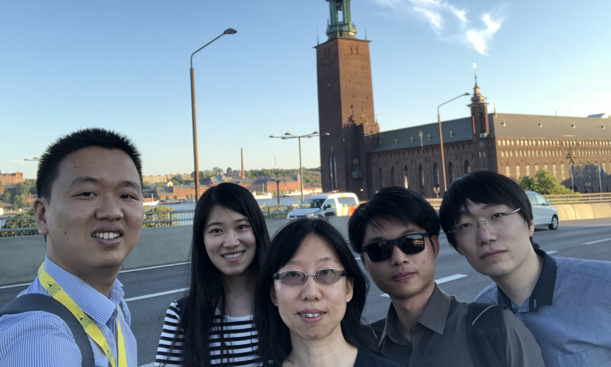
- 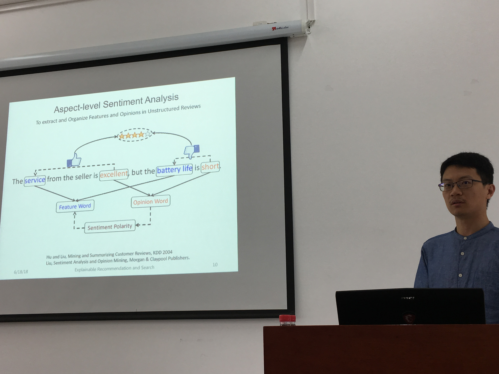
- 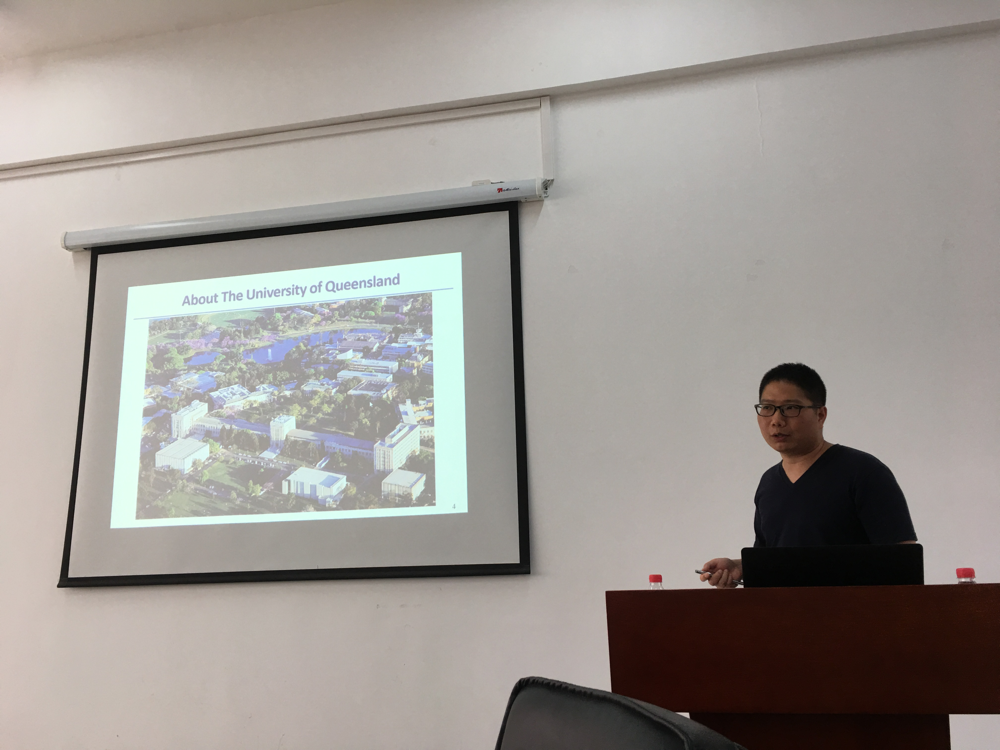